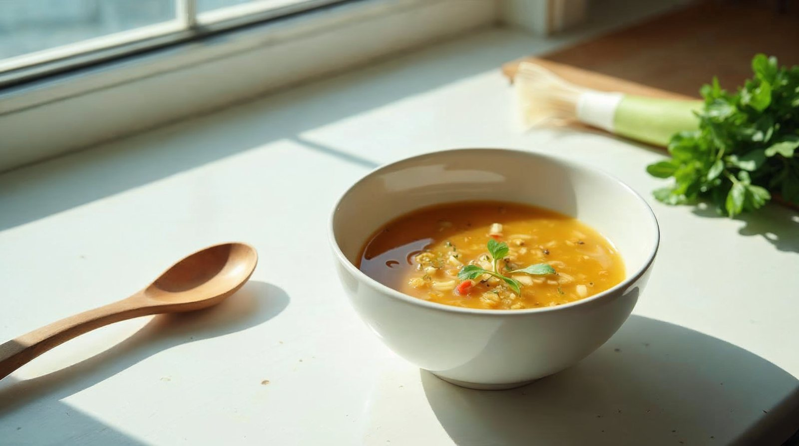
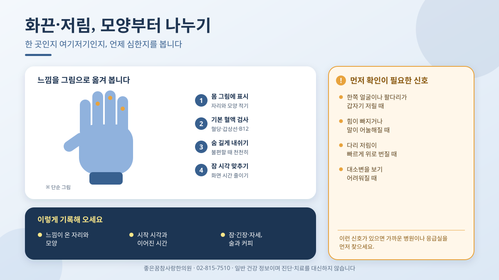

이종호 한의사 감수좋은꿈참사랑한의원 대표원장 (한의사 면허번호 19769)발행 2026-11-26 · 수정 2026-11-26
이 글의 차례
밤에 누워 불을 끄면 그제야 느낌이 올라옵니다. 종아리가 화끈거리다가 팔뚝이 찌릿하고, 어느새 등 한가운데에 개미가 기어가는 것 같습니다. 손으로 쓸어 보면 아무것도 없습니다. 낮에는 바빠서 잊고 지내다가, 조용해지면 다시 시작됩니다.
진료실에서 이런 이야기를 하시는 분들은 대개 이미 몇 군데 병원을 다녀오셨습니다. 검사에서는 크게 이상이 없다고 하는데 느낌은 그대로라서, 내가 예민한 건가 싶어 말을 꺼내기도 조심스럽다고 하십니다. 그 마음을 잘 압니다.
먼저 말씀드리고 싶은 것은, 느낌이 있다는 것 자체가 진짜라는 점입니다. 검사에서 큰 이상이 보이지 않는다는 것은 위험한 원인을 하나씩 덜어 냈다는 뜻이지, 불편이 없다는 뜻이 아닙니다. 그다음에는 그 느낌이 어떤 모양으로, 언제, 어디에 오는지를 차분히 나눠 보는 일이 필요합니다.
이 글에서는 화끈거림, 저림, 따끔거림, 벌레가 기어가는 느낌처럼 몸 여기저기에 오는 이상감각을 어떻게 나눠 보는지, 일상에서 해 볼 수 있는 것과 한의원에서 함께 살피는 점을 정리했습니다.
이상감각은 어떤 느낌들을 말하나요
이상감각은 아무것도 닿지 않았는데 무언가 느껴지거나, 닿은 것보다 훨씬 크게 느껴지는 감각을 두루 이르는 말입니다. 사람마다 표현이 다양해서, 진료실에서는 들으신 그대로의 말을 중요하게 받아 적습니다.
- 화끈거린다, 뜨겁다, 불에 덴 것 같다
- 저리다, 쥐가 날 것 같다, 전기가 오는 것 같다
- 따끔따끔하다, 바늘로 찌르는 것 같다
- 벌레나 개미가 기어가는 것 같다
- 남의 살 같다, 멍멍하다, 감각이 둔하다
같은 '저리다'라도 오래 앉아 다리가 저린 것과 이유 없이 손끝이 늘 저린 것은 다른 이야기입니다. 그래서 어떤 느낌인지와 함께, 그 느낌이 어떤 상황에서 생기고 사라지는지를 꼭 함께 여쭙습니다.
왜 몸 여기저기가 화끈거리고 저릴까요
감각은 피부와 근육에서 시작해 신경을 따라 척수와 뇌까지 전해집니다. 이 길 어느 곳에서든 신호가 흐트러지면 이상감각이 생길 수 있습니다. 진료실에서 자주 보는 갈래를 나눠 보면 다음과 같습니다.
- 신경이 눌리는 경우: 목이나 허리 디스크, 손목터널, 팔꿈치처럼 한 줄기를 따라 저림
- 말초신경이 약해진 경우: 당뇨, 항암 치료, 잦은 음주, 비타민 B12 부족 등으로 손발 끝부터 양쪽에
- 자율신경과 긴장: 불안하거나 숨을 가쁘게 쉴 때 손발과 입 주변이 저리고, 자리를 옮겨 다님
- 호르몬 변화: 갱년기나 갑상선 기능 변화와 함께 열감, 땀, 저림이 겹침
- 피부와 근육의 예민함: 넓은 범위의 통증과 함께 피부가 화끈거리고 쉽게 아픔
- 드시는 약: 일부 약을 새로 시작한 뒤 저림이나 화끈거림이 생기는 경우
자리가 한 곳에 머무르는지, 여기저기 옮겨 다니는지가 큰 갈림길이 됩니다. 한쪽 팔이나 다리를 따라 줄기처럼 내려간다면 신경이 눌린 쪽을, 양쪽 손발 끝에서 장갑과 양말을 낀 모양으로 시작한다면 말초신경 쪽을, 이곳저곳을 옮겨 다니며 긴장할 때 심해진다면 자율신경 쪽을 먼저 생각해 봅니다.
한 곳인가요, 여기저기인가요?
몸 그림에 표시해 보시면 의외로 모양이 또렷하게 드러나는 경우가 많습니다. 새끼손가락과 약지 쪽만 저리다면 팔꿈치 신경을, 엄지에서 약지 절반까지 저리다면 손목터널을, 엉덩이에서 종아리 바깥으로 내려간다면 허리 쪽을 함께 살핍니다.
반대로 오늘은 팔, 내일은 등, 그다음 날은 얼굴처럼 자리가 계속 바뀐다면 한 줄기 신경의 문제보다는 몸 전체의 예민함이나 긴장, 잠과 관련된 경우가 많습니다. 이런 분들은 대개 잠이 얕고, 걱정이 많아지는 시기에 느낌이 커졌다고 말씀하십니다.
두 가지가 섞여 있는 경우도 있습니다. 원래 허리 쪽 저림이 있던 분이 잠을 못 자고 긴장이 커지면서 몸 여기저기로 예민함이 번지기도 합니다. 그래서 하나로 단정하지 않고 겹겹이 나눠서 봅니다.
어떤 검사를 먼저 받아 보면 좋을까요
이상감각이 몇 주 이상 이어진다면 혈액 검사로 혈당, 갑상선, 비타민 B12, 빈혈 같은 기본적인 부분을 먼저 확인해 보시길 권합니다. 이런 검사는 가까운 내과에서 받으실 수 있고, 생각보다 많은 실마리를 줍니다.
한 줄기를 따라 저림이 이어지거나 힘이 함께 빠진다면 신경과나 정형외과, 신경외과에서 신경 검사나 영상 검사가 필요한지 판단을 받아 보세요. 한의원에 오셨더라도 이런 확인이 먼저 필요해 보이면 그 방향을 먼저 안내합니다.
검사에서 큰 이상이 없다고 들으셨다면, 그 결과지는 버리지 말고 가져와 주세요. 무엇이 확인되었고 무엇이 아직 남았는지를 함께 보면 다음 걸음을 정하기가 쉬워집니다.
긴장과 숨, 잠이 감각을 키웁니다
몸이 긴장하면 숨이 얕고 빨라집니다. 숨을 가쁘게 쉬면 혈액의 균형이 잠시 바뀌면서 손발과 입 주변이 저리고 따끔거릴 수 있습니다. 불안할 때 이런 느낌이 오면 더 불안해지고, 그러면 숨이 더 가빠지는 고리가 생기기도 합니다.
잠이 모자라면 몸이 아픔과 감각을 걸러 내는 힘이 떨어집니다. 평소라면 그냥 지나갔을 작은 신호도 크게 느껴지고, 밤에 조용해지면 그 신호가 더 또렷해집니다. 그래서 이상감각을 호소하시는 분께는 잠을 꼭 함께 여쭙습니다.
이것은 '마음 탓'이라는 뜻이 아닙니다. 몸과 마음은 같은 신경으로 이어져 있어서, 긴장을 풀고 잠을 고르게 하는 일이 감각을 가라앉히는 데에도 실제로 도움이 될 수 있다는 뜻입니다.
한의학에서는 이렇게 나눠 봅니다
한의학에서는 저리고 감각이 둔한 모습을 기혈이 끝까지 잘 닿지 못하는 상태로, 화끈거리고 오후나 밤에 심해지는 모습을 진액이 부족해 열이 뜨는 상태로 나눠 보기도 합니다. 긴장하면 여기저기 옮겨 다니는 느낌은 기운이 뭉치고 막힌 모습으로 봅니다.
이런 분류는 병원의 진단명을 대신하는 것이 아니라, 몸의 바탕에 따라 생활에서 무엇을 먼저 조절할지 정하는 참고로 씁니다. 같은 저림이라도 손발이 찬 분과 화끈거리는 분은 챙길 부분이 다릅니다.
비슷해 보이지만 따로 살피는 불편
저녁에 다리 속이 근질거려 가만히 있기 힘들고 움직이면 잠시 편해진다면, 하지불안 증후군을 함께 떠올려 봅니다. 이상감각과 비슷해 보이지만 '움직이고 싶은 충동'이 핵심이라는 점이 다릅니다.
몸 한쪽에 띠처럼 화끈거리고 따끔한 느낌이 며칠 이어지다가 물집이 올라온다면 대상포진일 수 있습니다. 물집이 생기기 전에 화끈거림이 먼저 오는 경우가 있어서, 한쪽 띠 모양의 불편이 새로 생겼다면 피부를 며칠 동안 잘 살펴보세요.
피부가 붉어지거나 부풀어 오르면서 가렵고 화끈거린다면 감각 신경보다는 피부 자체의 반응일 수 있습니다. 이럴 때는 피부과 진료가 먼저입니다. 이렇게 겉으로 보이는 변화가 있는지 없는지도 나눠 보는 중요한 기준이 됩니다.
계절과 생활에 따라 달라지는 느낌
겨울에는 손발이 차가워지면서 저림이 커지고, 여름에는 더위와 땀으로 화끈거림이 커지는 분이 많습니다. 같은 사람이라도 계절에 따라 불편의 모양이 바뀔 수 있다는 것을 알아 두시면 덜 놀라십니다.
일이 몰리는 달, 이사나 가족 일로 마음이 분주한 시기에도 느낌이 커지기 쉽습니다. 이런 때에는 잠과 끼니, 짧은 쉼을 평소보다 조금 더 챙겨 주세요.
먼저 이렇게 여쭙니다
처음 오시면 저는 대략 이런 순서로 여쭙니다. 미리 생각해 오시면 이야기가 훨씬 수월해집니다.
- 느낌이 시작된 지 얼마나 되었고, 처음 생긴 자리는 어디였나요?
- 한 곳에 머무르나요, 여기저기 옮겨 다니나요?
- 하루 중 언제 심하고, 무엇을 하면 덜하거나 더한가요?
- 당뇨, 갑상선 질환, 항암 치료, 잦은 음주가 있나요?
- 최근 새로 시작한 약이 있나요?
- 잠과 긴장, 걱정은 요즘 어떠신가요?
정확히 기억하지 못하셔도 괜찮습니다. 몸 그림에 불편한 자리를 색깔로 표시해 오시면, 말로 설명하기 어려운 부분도 한눈에 함께 볼 수 있습니다.

일상에서 먼저 해 볼 수 있는 것
이상감각은 한 번에 사라지기보다 조금씩 가라앉는 경우가 많습니다. 몸이 예민해지는 계기를 하나씩 덜어 낸다는 마음으로 시작해 보세요.
- 잠드는 시각을 일정하게 맞추고 잠들기 전 화면 보는 시간 줄이기
- 불편할 때 내쉬는 숨을 들이쉬는 숨보다 길게 하며 천천히 호흡하기
- 오래 같은 자세로 있지 않고 30~40분마다 일어나 움직이기
- 술과 카페인은 양과 횟수를 줄여 보기
- 끼니를 거르지 않고 고르게 먹기
- 화끈거리는 부위는 미지근한 물로 식히고, 저린 부위는 가볍게 주무르기
느낌이 올 때마다 손으로 긁거나 세게 문지르면 피부가 더 예민해질 수 있습니다. 부드러운 면 옷을 입고, 너무 뜨거운 물로 오래 씻지 않는 것도 도움이 됩니다.
걷기처럼 가벼운 움직임은 혈액 순환을 돕고 잠을 깊게 하는 데에도 보탬이 됩니다. 숨이 약간 찰 정도로 하루 20~30분, 무리하지 않는 선에서 꾸준히 해 보세요.
당뇨가 있는 분은 발에 감각이 둔해져 상처를 늦게 알아챌 수 있으니, 씻은 뒤 발바닥과 발가락 사이를 매일 한 번씩 살펴보시길 권합니다.
한의원에서 함께 살필 수 있는 경우
- 검사에서 큰 이상은 없다는데 화끈거림이나 저림이 이어지는 경우
- 긴장하거나 잠을 설친 날 느낌이 여기저기로 번지는 경우
- 목이나 허리, 어깨가 굳으면서 팔다리 저림이 함께 오는 경우
- 갱년기 무렵 열감, 땀과 함께 피부가 화끈거리는 경우
- 손발이 차고 저리면서 소화가 약하고 쉽게 피로한 경우
좋은꿈참사랑한의원에 오시면 먼저 아래 '먼저 확인이 필요한' 신호가 없는지부터 봅니다. 그다음 맥을 짚고 목과 허리, 팔다리의 움직임과 감각을 직접 확인하며, 잠과 긴장, 소화, 손발 온도를 여쭙습니다.
진찰한 내용을 바탕으로 생활에서 바꿔 볼 것 하나와 함께 침, 약침, 추나, 온열 물리치료, 한약 상담 가운데 지금 상태에 맞는 것을 정합니다. 한약을 상의할 때는 드시는 약을 모두 확인하고 신중하게 정합니다. 처방받은 약은 상의 없이 멈추지 않습니다.
목이나 허리 디스크로 저림이 이어진다면 수술이 필요한지는 정형외과나 신경외과에서 판단을 받고, 한의원 진료는 그 판단과 나란히 가도록 맞춥니다. 임신 중이라면 먼저 알려 주시고 산부인과와도 상의해 주세요.
이렇게 기록해 오시면 상담이 쉬워집니다
이상감각은 진료실에 계신 동안에는 잠잠한 경우가 많아서, 집에서 남긴 기록이 가장 좋은 자료가 됩니다. 2주 정도만 간단히 적어 보세요.
- 느낌이 온 자리와 모양(화끈, 저림, 따끔, 기어가는 느낌)
- 시작한 시각과 이어진 시간, 정도(0~10)
- 그때 하고 있던 일, 자세, 긴장 정도
- 잠든 시각과 깬 시각, 밤에 깬 횟수
- 술, 커피, 새로 시작한 약
기록을 나란히 놓고 보면 느낌이 심했던 날과 잠, 긴장, 자세 사이의 연결이 보이기 시작합니다. 그 연결 하나가 다음 걸음을 정하는 실마리가 됩니다.
예민해진 몸을 다독이며
이상감각은 남에게 설명하기 어렵고, 보이지 않아서 더 외롭게 느껴지는 불편입니다. 혼자 검색하며 불안을 키우기보다, 느낌을 하나씩 적어 보고 함께 나눠 보시길 권합니다.
이번 주에는 몸 그림 한 장, 잠드는 시각 맞추기, 불편할 때 천천히 내쉬는 숨 가운데 하나만 골라 보세요. 다음에 오시면 그 기록부터 함께 펼쳐 보겠습니다.
이런 증상은 먼저 확인이 필요합니다
- 갑자기 한쪽 얼굴이나 팔다리가 저리면서 힘이 빠지거나 말이 어눌해지는 경우
- 다리 저림이 빠르게 위로 번지며 힘이 빠지거나 대소변을 보기 어려워진 경우
이런 신호가 있으면 한의원보다 가까운 병원이나 응급실을 먼저 찾으세요.
함께 읽으면 좋은 글
- 당뇨가 있는데 발끝이 저리고 화끈거리거나 감각이 둔해지는 말초신경병증은 어떻게 살피나요?
- 검사에서는 이상이 없다는데 두근거림, 어지럼, 소화불량, 손발 저림이 번갈아 찾아오는 자율신경실조는 어떻게 살피나요?
- 밤만 되면 손바닥과 발바닥이 화끈거려 이불 밖으로 내놓게 되는 수족번열은 어떻게 살피나요?
- 목에서 팔로 저림이 내려올 때(목디스크 의심)는 어떤 점을 먼저 확인하나요?
- 손발이 저린 것과 시린 것은 어떻게 다르게 설명하면 될까요?

여쭙는 것
- 느낌이 시작된 지 얼마나 되었고, 처음 생긴 자리는 어디였나요?
- 한 곳에 머무르나요, 여기저기 옮겨 다니나요?
- 하루 중 언제 심하고, 무엇을 하면 덜하거나 더한가요?
생활에서 해 볼 것
- 잠드는 시각을 일정하게 맞추고 잠들기 전 화면 보는 시간 줄이기
- 불편할 때 내쉬는 숨을 들이쉬는 숨보다 길게 하며 천천히 호흡하기
- 오래 같은 자세로 있지 않고 30~40분마다 일어나 움직이기
한의원에서 함께 살필 것
- 검사에서 큰 이상은 없다는데 화끈거림이나 저림이 이어지는 경우
- 긴장하거나 잠을 설친 날 느낌이 여기저기로 번지는 경우
- 목이나 허리, 어깨가 굳으면서 팔다리 저림이 함께 오는 경우
먼저 확인이 필요한 신호
- 갑자기 한쪽 얼굴이나 팔다리가 저리면서 힘이 빠지거나 말이 어눌해지는 경우
- 다리 저림이 빠르게 위로 번지며 힘이 빠지거나 대소변을 보기 어려워진 경우
한눈에 보는 표
| 구분 | 핵심 |
|---|---|
| 여쭙는 것 | 느낌이 시작된 지 얼마나 되었고, 처음 생긴 자리는 어디였나요? 한 곳에 머무르나요, 여기저기 옮겨 다니나요? |
| 생활에서 해 볼 것 | 잠드는 시각을 일정하게 맞추고 잠들기 전 화면 보는 시간 줄이기 불편할 때 내쉬는 숨을 들이쉬는 숨보다 길게 하며 천천히 호흡하기 |
| 한의원에서 함께 살필 것 | 검사에서 큰 이상은 없다는데 화끈거림이나 저림이 이어지는 경우 긴장하거나 잠을 설친 날 느낌이 여기저기로 번지는 경우 |
| 먼저 확인이 필요한 신호 | 갑자기 한쪽 얼굴이나 팔다리가 저리면서 힘이 빠지거나 말이 어눌해지는 경우 다리 저림이 빠르게 위로 번지며 힘이 빠지거나 대소변을 보기 어려워진 경우 |
자주 묻는 질문
검사에서 이상이 없다는데 왜 계속 저리고 화끈거리나요?
검사는 위험한 원인을 덜어 내는 데 큰 역할을 하지만, 잠과 긴장, 자세, 근육의 뭉침처럼 검사에 잘 드러나지 않는 부분도 감각에 영향을 줍니다. 느낌의 모양과 계기를 기록해 함께 나눠 보시길 권합니다.
이상감각이 있으면 어느 과에 먼저 가야 하나요?
몇 주 이상 이어진다면 내과에서 혈당, 갑상선, 비타민 B12 같은 기본 혈액 검사를 먼저 받아 보시길 권합니다. 한 줄기를 따라 저리거나 힘이 빠진다면 신경과나 정형외과 판단을 받아 보세요.
침이나 추나를 받아도 괜찮나요?
진찰한 뒤 목이나 허리, 근육 쪽 문제가 함께 보이면 침, 약침, 추나 가운데 맞는 방법을 상의합니다. 피를 묽게 하는 약을 드시거나 당뇨가 있다면 처음에 꼭 말씀해 주세요.
비타민을 먹으면 저림이 사라지나요?
혈액 검사에서 부족한 것이 확인된 경우에는 보충이 도움이 될 수 있지만, 부족하지 않은데 많이 드신다고 더 나아지는 것은 아닙니다. 보충 여부는 검사 결과를 보고 담당 선생님과 상의해 정하세요.
좋은꿈참사랑한의원은 재진 때 지난번 이야기부터 이어서 여쭙니다. 진료시간과 예약은 오시는 길에서 확인하세요.
어디서 상담받을 수 있나요?
좋은꿈참사랑한의원은 서울 동작구 만양로2길 2 신성빌딩 3층·5층(서울 동작구 상도동, 7호선 상도역 3번 출구 근처)에 있습니다. 한의사 3명(이종호 대표원장, 조영기 수석진료원장, 정원영 진료원장)이 진료합니다. 진료시간은 평일 09:30~20:00(점심 13:00~14:00), 토·일·공휴일 09:30~15:00이며, 방문 전 전화로 확인을 권합니다. 예약은 네이버 예약, 카카오톡 상담, 전화 02-815-7510로 받습니다.
이 글은 일반적인 건강 정보이며 개인의 진단이나 치료를 대신하지 않습니다. 증상이 있거나 복용 중인 약이 있다면 진료를 통해 확인하세요. 치료 효과는 개인마다 다를 수 있습니다.
작성 기준: 일반적으로 알려져 있는 건강 정보를 참고해 정리했습니다(대표원장 감수). 증상 기록은 1~2주 동안 하루 1회, 비슷한 시간에 적어 오시면 지난 상태와 비교하기 쉽습니다.